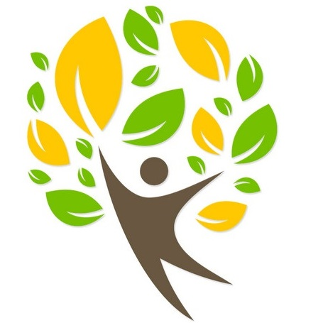
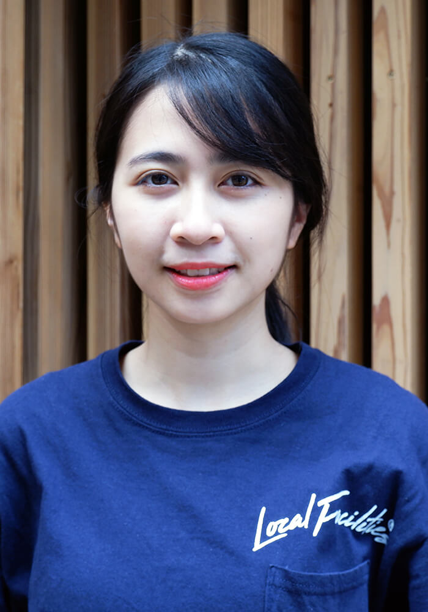
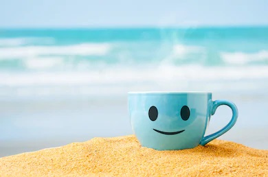

PHILOSOPHY
経営理念

我々はお客様に対して“楽しみの発見まで”をお手伝いする
そのサービスによりお客様は大満足し、
我々はもっといいものを提供しようと努力する
我々は関わる全ての人々（顧客・取引先・社員・株主・社会）を幸せにする
幸せスパイラル提供企業である
MISSION
使命
成功物語（サクセスストーリー）の演出家
経済とは「経世済民」の略語である。
「他者・他社の成功を創り出すこと」を自分たちの使命とする。
成功したから幸せになるのではない。幸せだから成功しちゃうのだ。
幸せな状態の人を創出する！
芳村 拓巳
私は主に工事の日程調整、チームマネジメント、安全管理などを担当しています。以前は現場の作業を5年以上行っていたため、その当時の経験を生かして現在はチームのサポートを行っています。この仕事の魅力は１つのチームで配電設備を完成させて行くことです。経験年数も個性もまったく違う仲間とお互いに協力しあって難しい工事を竣工できたときは大きな喜びと達成感を感じることができます。そんな仲間達のサポートをして一緒に喜びを分かち合うことが私の仕事の魅力・やり甲斐です。
三浦 秀之
私は主に、内線工事の営業しております。具体的には、お客様の相談、依頼を受けてから、お見積り・資材手配・工事の日程調整・竣工書類作成まで行っております。未経験からの出発で、最初はお客様から専門的な質問をされてヒヤヒヤすることもありましたが、お客様に「ありがとう」「助かった」と言っていただけるので、嬉しいですし励みになります。自分が行った一つひとつの仕事の積み重ねにより、お客様、会社に貢献できているのだなと実感しています。.
Nguyen Thuy Linh
私は1994年ベトナム ハノイ市生まれ。ハノイ国家大学（Vietnam National University, Hanoi）人文社会科学大学卒（アーカイブズ学専攻）。卒業後来日し日本語を習得。2020年3月より当社グループにてアルバイトとして勤務後、同年9月正社員として入社。日本語、英語、基本ITなど保有資格も多く、あらゆる業務に対応できるオールラウンダー。業務ルールの作成、グループ総務などを担当し、働きやすい職場づくりに励んでいる。
VALUE
価値観

企業は何かを提供しないと生き残りはできない。
私たちは「問題解決」を提供している
もっと言えば「機会開発」を提供しようとしている。
問題を発見しその解決に挑戦する限り、
他から必要とされるため企業として滅亡することはない。